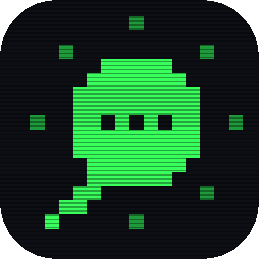
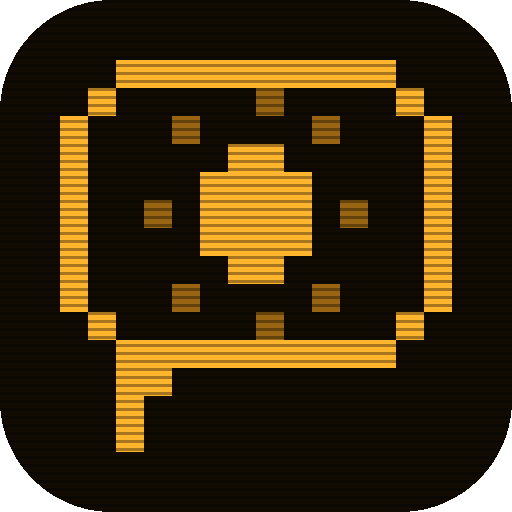
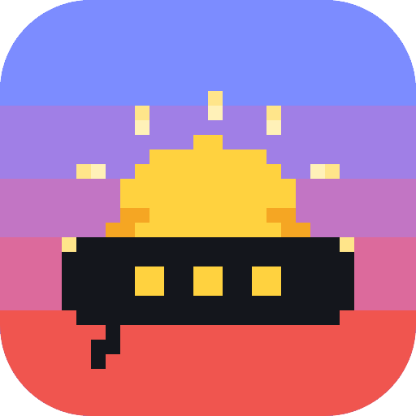
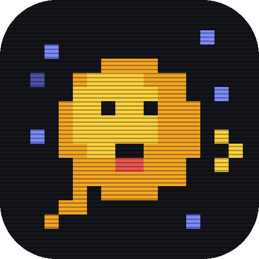
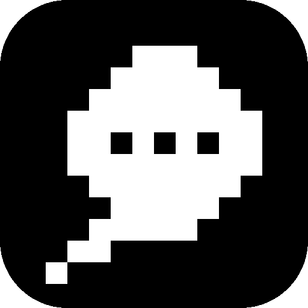
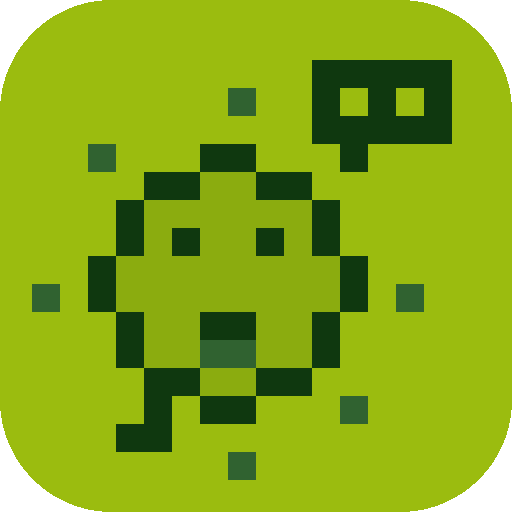
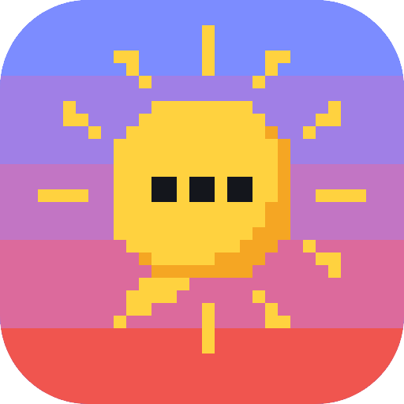
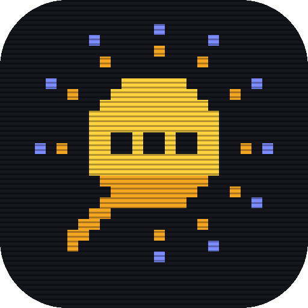
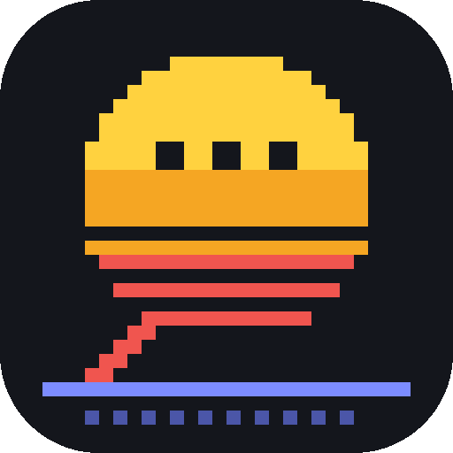

10 variants of #11's talking sun in #5's pixel style · each at 256px, 32px and 16px on light and dark

01. Phosphor talking sun — 16px grid, phosphor-green mono with scanlines: a solid sun with a stepped tail, knocked-out typing dots and dim dot rays.

02. Amber sun in a bubble — 16px grid, amber CRT mono with scanlines: the #5 bubble outline with a tiny rayed sun inside it.

03. Sunrise over a bubble horizon — 24px grid, full warm sunrise bands: a half sun rising behind a dark speech bubble that forms the horizon, sun-colored typing dots.

04. Night talker — 16px grid, indigo night with scanlines: an amber sun with a face mid-sentence (open red mouth), stars and chatter marks.

05. 1-bit sun — 12px grid, pure black and white: the chunkiest possible sun-bubble with three knocked-out dots. Built for 16px.

06. Handheld 4-tone sun — 16px grid, classic handheld 4-tone green: an outlined sun face talking, with a little reply bubble and dot rays.

07. Hi-res talking sun — 32px grid, faithful pixel port of #11: indigo-to-coral banded sky, pixel-line rays, shaded sun, tail and typing dots.

08. Typing-dot rays — 24px grid, dark tile with scanlines: rays drawn as amber-and-indigo dot pairs, so the whole halo reads as typing ellipses.
09. Ray tail — 12px grid, yellow on coral-red: one of the eight dot rays stretches into the speech tail; red dots punch through the sun.

10. Outrun sun — 32px grid, synthwave: a striped yellow-to-red sunset sun with typing dots, a tail dripping to an indigo horizon.